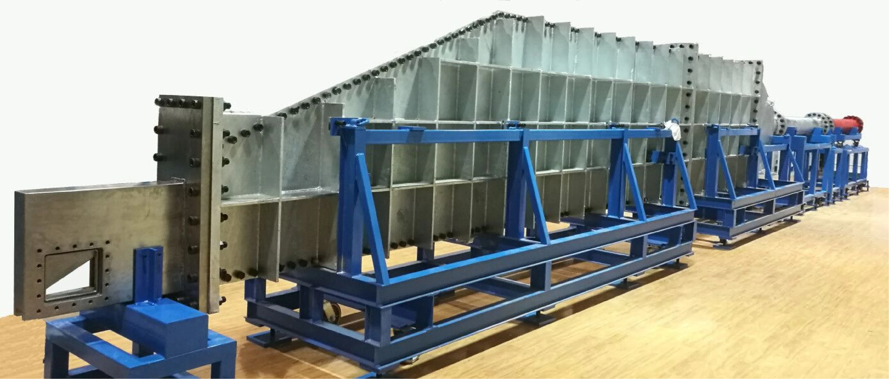

Education
教育经历
- 河南科技大学，生物医学工程专业，学士
- 中国科学技术大学近代力学系，流体力学专业，博士
Experimental Results
Experimental Fluid Mechanics · Shock Dynamics
课题组主要研究实验流体力学、流动稳定性和激波动力学，重点关注激波作用下的界面演化、流动结构及实验诊断。
Education
Appointments
Research
开展高速瞬态流动实验，利用纹影、高速摄影等方法获取并分析流场信息。
研究激波、稀疏波等作用下的界面演化，关注扰动增长、涡量沉积和混合层发展。
关注激波生成、反射、折射、干扰及激波与涡/界面的相互作用机理。
研究激波穿过颗粒幕后的波系演化、颗粒运动及气固耦合效应。
Teaching
承担本科生与研究生课程教学。
Engineering Computational Methods
Shock Wave Dynamics
Facilities
实验装置包括激波管、稀疏波管、纹影系统和高速摄影设备，用于瞬态高速流动的观测与定量分析。点击图片可放大。

Group Gallery
实验平台、学术会议、组会活动与代表性流动图像。
Selected Publications
People
Alumni
Timeline
滚动到本区域附近后加载访问地图。